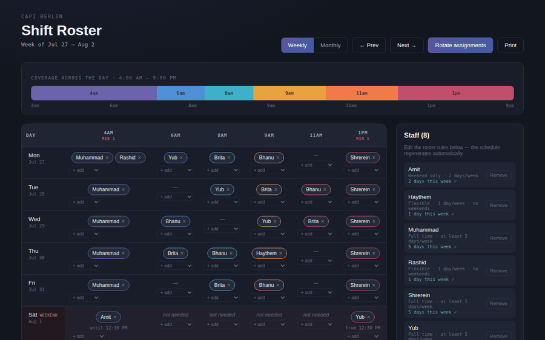
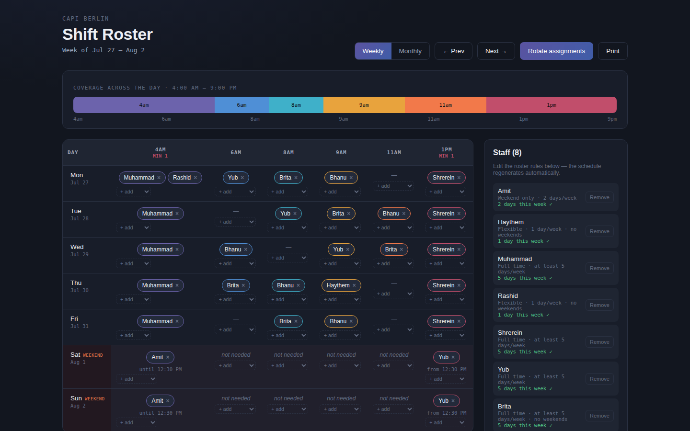
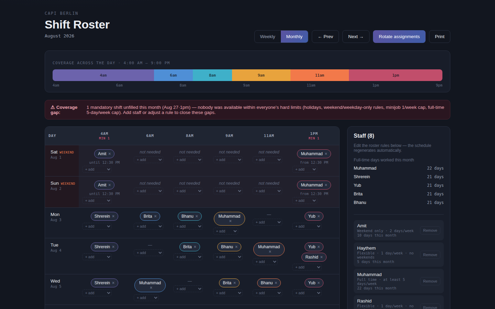
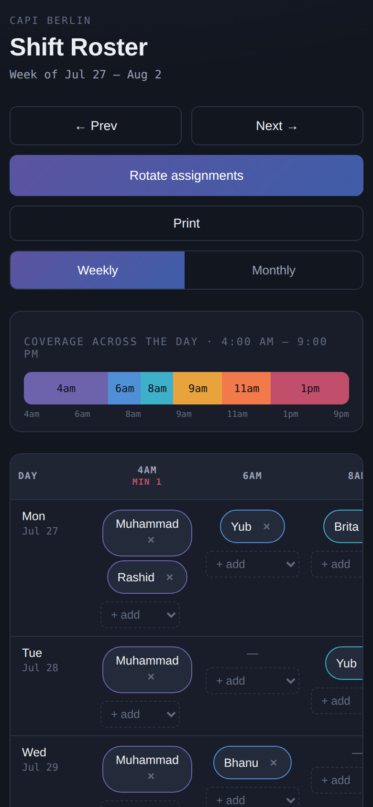

A quick introduction
I'm a fresher software engineer with no professional experience yet, but I've been building projects on my own to learn by doing — ranging from small games and utilities to a scheduling application built to solve a real problem for a local electronics store. I enjoy turning everyday problems into working software and I'm looking for an entry-level role where I can keep learning and contribute from day one.
What I've built so far




The problem
A Berlin store needed coverage from 4am open to 9pm close, with two shifts that could never be left empty. Eight staff across three contract types (full-time, weekend-only, minijob) each carried different hard limits — and the rules interact badly: the weekend needs two mandatory shifts covered, but only one person was contractually allowed to work weekends at all. Scheduling that by hand meant either breaking someone's contract or quietly leaving a shift uncovered.
What I built
A hand-built staged rule engine that auto-generates a full week or month of shifts from the staff list and contract rules, plus a manual editing layer (drag between shifts, remove, add from a dropdown) so a manager can fix the edge cases the algorithm won't always get right — with manual edits stored separately so they survive re-shuffling.
What actually broke
The two "always true" rules — 5-day cap and mandatory coverage — turned out to be
mathematically incompatible some weeks given the actual staffing. Fixed with an explicit
tiered priority system (fully-compliant schedule first, then relax the soft cap, then
allow double-booking as a last resort) with every override logged and shown to the
manager instead of hidden. Separately, a date bug used toISOString(), which
converts to UTC first — rolling local midnight back a day for any timezone ahead of UTC,
Berlin included, and silently shifting the weekend-only employee's schedule. Every fix
was caught by regression tests run against the scheduling logic directly in Node, not by
clicking through the UI.
Next up
Persistence (nothing survives a refresh yet), swapping the staged heuristics for a real constraint solver, and a proper automated test suite instead of ad hoc per-bug scripts.
A real-time weather site locked to Berlin that pulls live conditions from the Open-Meteo API and renders one of six fully animated scenes — sunny, cloudy, rain, snow, fog, or thunderstorm — matched to the current conditions via a WMO weather-code mapping. Auto-refreshes every 10 minutes, fully responsive, zero dependencies or API key required.
Mini Projects
Classic 2-player game with win detection and game-state logic, built with vanilla JavaScript and DOM manipulation.
View Repository →A responsive calculator app handling basic arithmetic operations with a clean, functional UI.
View Repository →